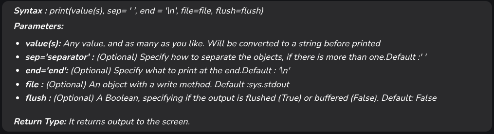
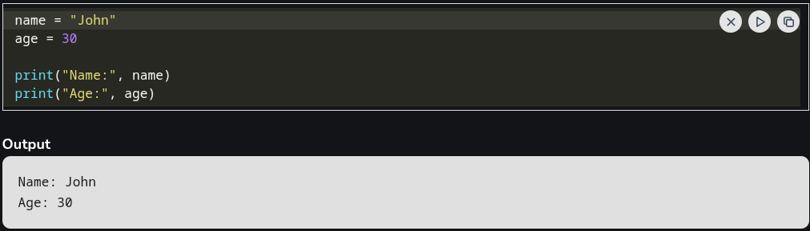
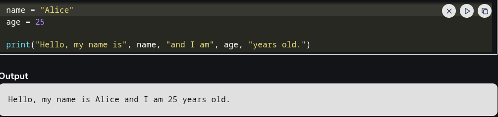

Print in Python
Python print() function prints the message to the screen or any other standard output device. In this course, we will cover about print() function in Python as well as it's various operations. Below is the print syntax in python with its parameters!
Though it is not necessary to pass arguments in print() function, it requires an empty parenthesis at the end that tells Python to execute the function rather than calling it by name. Now, let's explore the optional arguments that can be used with the print() function.
In this example, we have 2 variables integer and string. We are printing all variables with print() function.
How print() works in Python?
You can pass variables, strings, numbers, or other data types as one or more parameters when using the print() function. Then, these parameters are represented as strings by their respective str() functions. To create a single output string, the transformed strings are concatenated with spaces between them.
In this code, we are passing two parameters name and age to the print function.
Source: Geeksforgeeks